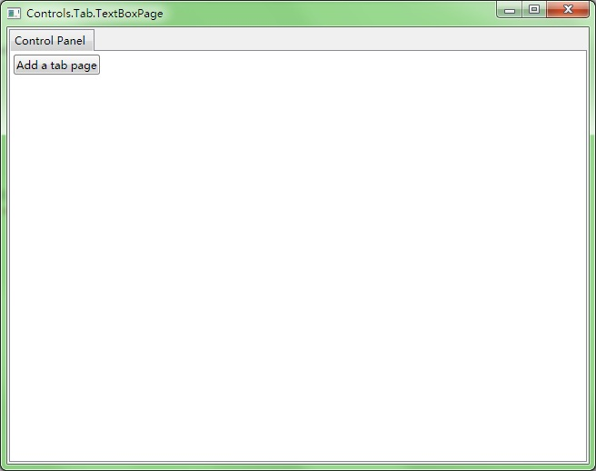
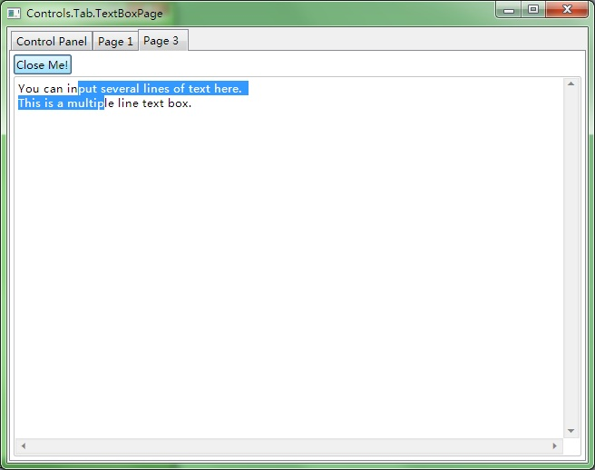

---- GPU Accelerated C++ User Interface |
|||||
| HOME | GETTING START | DEMOS | DOWNLOAD | DOCUMENT | CONTACT |
Tab.TextBoxPage 
#include "..\..\Public\Source\GacUIIncludes.h"
#include <Windows.h>
int CALLBACK WinMain(HINSTANCE hInstance, HINSTANCE hPrevInstance, LPSTR lpCmdLine, int CmdShow)
{
return SetupWindowsDirect2DRenderer();
}
class TextBoxPage : public GuiTabPage
{
private:
static int pageCounter;
GuiButton* closeButton;
GuiMultilineTextBox* textBox;
void closeButton_Clicked(GuiGraphicsComposition* sender, GuiEventArgs& arguments)
{
// deleteing the tab page will also delete the button, because the button is in the page
// when an event is processing, the button is not going to be deleted
// because there are many works to do after this event
// and maybe someone has already added another event handler to this button
// so it use GetApplication()->InvokeInMainThread to send a function to the queue
// so that this function will be executed after this input message (an input message raises multiple events)
// to the user, this page is closed after cliking this button
GetApplication()->InvokeInMainThread([this]()
{
// remove the page and delete it
this->GetOwnerTab()->RemovePage(this);
delete this;
});
}
void OnPageContainerReady(GuiGraphicsComposition* sender, GuiEventArgs& arguments)
{
// create a table to place a button and a text box
GuiTableComposition* table=new GuiTableComposition;
table->SetRowsAndColumns(2, 1);
table->SetRowOption(0, GuiCellOption::MinSizeOption());
table->SetRowOption(1, GuiCellOption::PercentageOption(1.0));
table->SetColumnOption(0, GuiCellOption::PercentageOption(1.0));
table->SetAlignmentToParent(Margin(0, 0, 0, 0));
table->SetCellPadding(2);
{
GuiCellComposition* cell=new GuiCellComposition;
table->AddChild(cell);
cell->SetSite(0, 0, 1, 1);
closeButton=g::NewButton();
closeButton->SetText(L"Close Me!");
closeButton->Clicked.AttachMethod(this, &TextBoxPage::closeButton_Clicked);
cell->AddChild(closeButton->GetBoundsComposition());
}
{
GuiCellComposition* cell=new GuiCellComposition;
table->AddChild(cell);
cell->SetSite(1, 0, 1, 1);
textBox=g::NewMultilineTextBox();
textBox->GetBoundsComposition()->SetAlignmentToParent(Margin(0, 0, 0, 0));
textBox->SetText(L"You can input several lines of text here.\r\nThis is a multiple line text box.");
cell->AddChild(textBox->GetBoundsComposition());
}
this->GetContainer()->GetContainerComposition()->AddChild(table);
}
public:
TextBoxPage()
:closeButton(0)
,textBox(0)
{
PageContainerReady.AttachMethod(this, &TextBoxPage::OnPageContainerReady);
this->SetText(L"TextBoxPage Sample No."+itow(++pageCounter));
}
~TextBoxPage()
{
}
};
int TextBoxPage::pageCounter=0;
class TextBoxPageWindow : public GuiWindow
{
private:
GuiTab* tabControl;
GuiTabPage* controlPanelPage;
GuiButton* buttonAddPage;
void buttonAddPage_Clicked(GuiGraphicsComposition* sender, GuiEventArgs& arguments)
{
// when the button is clicked, it creates a new TextBoxPage and adds it to the tab control
TextBoxPage* page=new TextBoxPage;
tabControl->CreatePage(page);
tabControl->SetSelectedPage(page);
}
public:
TextBoxPageWindow()
:GuiWindow(GetCurrentTheme()->CreateWindowStyle())
{
this->SetText(L"Controls.Tab.TextBoxPage");
this->GetBoundsComposition()->SetPreferredMinSize(Size(640, 480));
// create a tab control
tabControl=g::NewTab();
tabControl->GetBoundsComposition()->SetAlignmentToParent(Margin(2, 2, 2, 2));
this->AddChild(tabControl);
// the first page is a control panel
controlPanelPage=tabControl->CreatePage();
controlPanelPage->SetText(L"Control Panel");
// add a button to the control panel
buttonAddPage=g::NewButton();
buttonAddPage->SetText(L"Add a tab page");
buttonAddPage->Clicked.AttachMethod(this, &TextBoxPageWindow::buttonAddPage_Clicked);
controlPanelPage->GetContainer()->GetContainerComposition()->SetInternalMargin(Margin(2, 2, 2, 2));
controlPanelPage->GetContainer()->AddChild(buttonAddPage);
this->ForceCalculateSizeImmediately();
this->MoveToScreenCenter();
}
~TextBoxPageWindow()
{
}
};
void GuiMain()
{
GuiWindow* window=new TextBoxPageWindow();
GetApplication()->Run(window);
delete window;
}
|
|||||